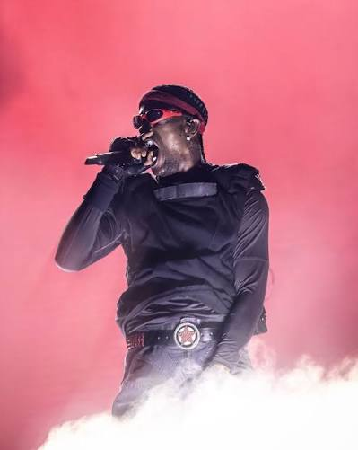
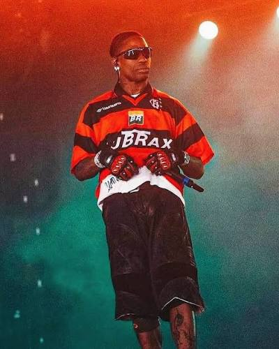

Um cantor de trap norte-americano

Aos 17 anos, Travis iniciou sua carreira como produtor musical, com foco na produção de hip-hop.Posteriormente, ele entrou em sua primeira parceria com Chris Holloway, seu amigo de longa data, formando a dupla The Graduates ("Os Graduados", em tradução livre). Em 2008, a dupla lançou o seu primeiro EP sem título na rede social Myspace.
Em 29 de março de 2013, depois de sua entrevista com o DJ britânico Semtex, Travis estreou um trecho do seu single comercial de estreia, intitulado "Upper Echelon", com 2 Chainz e T. I. Em 2 de abril de 2013, Travis declarou que Owl Pharaoh era a sua mixtape de estreia e seria lançado na iTunes Store no dia 21 de maio daquele ano. Em 23 de abril de 2013, o "Upper Echelon" foi enviado para as rádios americanas. O EP foi lançado para download gratuito.
Em 5 de Maio de 2014, ele liberou a versão completa da música com o seu novo título "Don't Play", apresentando um sample da música "M. O. N. E. Y" da banda britânica de rock The 1975.[22][23] Em 11 de julho de 2014, "Don't Play", foi oficialmente lançado como single de Days Before Rodeo, através de distribuição digital.
Após o sucesso de Days Before Rodeo, Scott anunciou que ele seria atração em uma turnê chamada The Rodeo Tour, com o rapper Young Thug, do grupo musical Rich Gang e produtor de Metro Boomin. A turnê começou em 1º de março de 2015, em Santa Ana, Califórnia, e terminou em 1º de abril de 2015, em Portland, Oregon, atravessando grandes cidades como Denver, Houston, Chicago, Detroit, Nova York, Atlanta, Filadélfia, San Diego, Los Angeles, San Francisco, e Seattle.
"'Days Before Rodeo’ é apenas a jornada de eu descobrir quem eu sou"
Travis Scott
I get those goosebumps every time, yeah
You come around, yeah
You ease my mind,
You make everything feel fine
Travis Scott - goosebumps (feat. Kendrick Lamar)

Você pode conhecer mais sobre o Travis Scott clicando aqui